RecyklingUnibud-Czernin – hurtownia budowlana z pow. kołobrzeskiego. Własna prasa Strautmann, hala i transport. Obsługujemy sklepy, magazyny, budowy i warsztaty. Czysty, posortowany materiał odbieramy za darmo.
Unibud-Czernin – groothandel in bouwmaterialen uit de regio Kołobrzeg (PL). Eigen Strautmann-balenpers, hal en transport. Voor winkels, magazijnen, bouwplaatsen en werkplaatsen. Schoon, gesorteerd materiaal halen we gratis op.
Zamów odbiórOphaling aanvragen+48 94 352 21 47Folia stretch, worki, kaptury z palet. Czysta, przezroczysta i kolorowa – wyceniamy osobno.
Stretchfolie, zakken, pallethoezen. Schoon, transparant en gekleurd – aparte beoordeling.
Opakowania kartonowe, tektura falista. Suche, bez folii i styropianu.
Kartonnen verpakkingen, golfkarton. Droog, zonder folie en piepschuim.
Elementy plastikowe, skrzynki, części z tworzyw. Posortowane, w big-bagach.
Kunststof onderdelen, kratten. Gesorteerd, in big bags.
Sprzedajemy sprasowane bele recyklerom w Polsce i UE. Zapytaj o ofertę.
Wij verkopen geperste balen aan recyclers in Polen en de EU. Vraag een offerte.
Prosta zasada: im czystszy i lepiej posortowany materiał, tym taniej dla Was. Bele sprzedajemy recyklerom – od firm odbieramy, nie skupujemy na wagę od dostawców.
Eenvoudige regel: hoe schoner en beter gesorteerd, hoe voordeliger voor u. Balen verkopen we aan recyclers – bij bedrijven halen we op, we kopen niet in op gewicht bij leveranciers.
Folia HDPE/LDPE, karton oraz posortowane ABS/PP – odbiór bez opłat. Materiał suchy, bez zanieczyszczeń i bez mieszania frakcji.
HDPE/LDPE-folie, karton en gesorteerd ABS/PP – ophaling zonder kosten. Droog materiaal, zonder vervuiling en zonder gemengde stromen.
Za taki materiał płacicie nam za odbiór. Cenę podajemy po wycenie (zdjęcia + opis ilości). Wyślij formularz lub zadzwoń.
Voor dit materiaal betaalt u ons voor de ophaling. Prijs na taxatie (foto’s + volume). Stuur het formulier of bel ons.
Telefon lub formularz: rodzaj materiału, ilość, adres. Najlepiej dołącz zdjęcia.
Telefoon of formulier: soort materiaal, hoeveelheid, adres. Liefst met foto’s.
Czysty i posortowany – odbiór za darmo. Nieposegregowany – wycena opłaty za odbiór.
Schoon en gesorteerd – gratis ophaling. Ongesorteerd – offerte voor ophaalkosten.
Przyjeżdżamy w ustalonym terminie, ważymy, wystawiamy dokumenty.
Wij komen op de afgesproken datum, wegen en leveren documenten.
Materiał prasujemy w hali w Czerninie i przekazujemy do recyklingu.
Het materiaal wordt in onze hal in Czernin geperst en gerecycled.
Prasa belująca PP 1207
Balenpers PP 1207
Blisko drogi S6 i Kołobrzegu
Vlakbij snelweg S6 en Kołobrzeg
Unibud-Czernin na rynku od 2019 r.
Unibud-Czernin actief sinds 2019
Czernin 65A, 78-113 Czernin
woj. zachodniopomorskie, PolskaWest-Pommeren, Polen
Tel. +48 94 352 21 47
E-mail: biuro@unibud-czernin.pl
Pn–Pt 7:00–16:00, Sob 7:00–14:00
Ma–Vr 7:00–16:00, Za 7:00–14:00